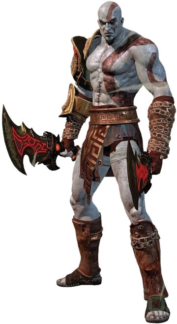
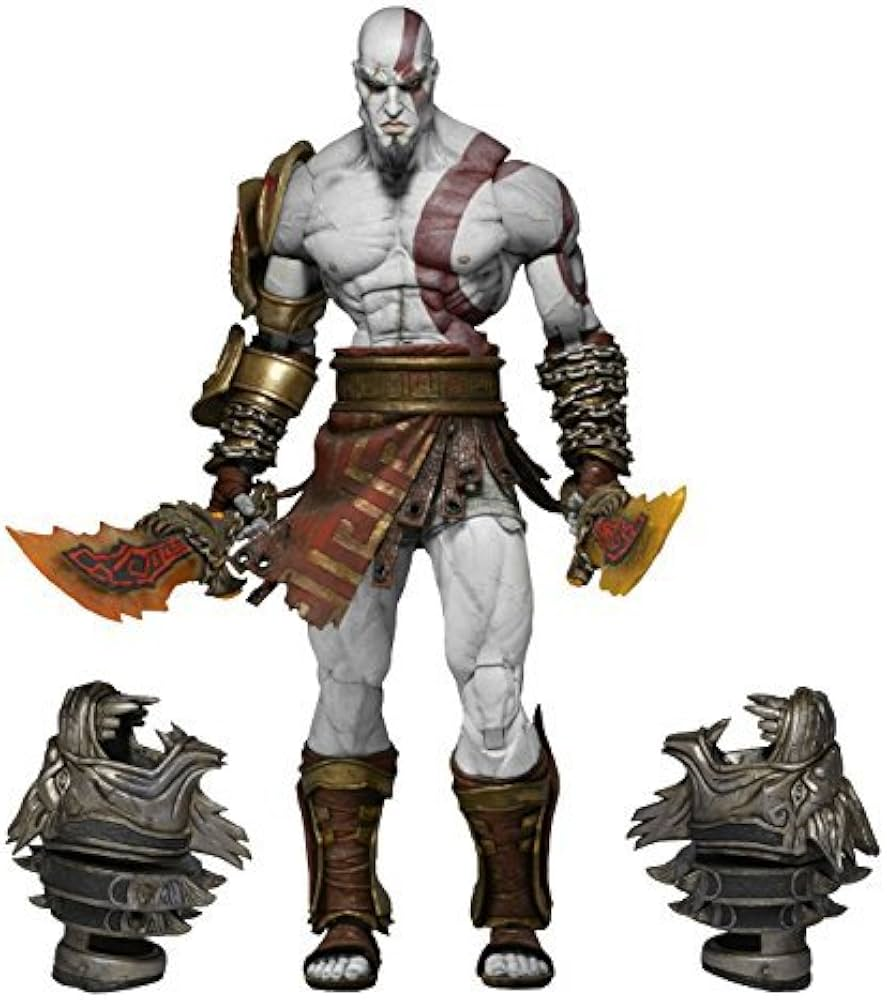
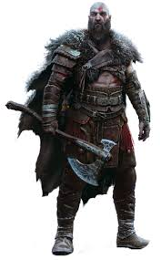

Game: God of War
Description: Kratos is a Spartan demigod, known for his strength and relentless fury. Armed with his iconic Blades of Chaos, he has battled gods, monsters, and titans. His intimidating appearance, with a thick beard and a powerful physique, makes him a symbol of raw power. Though his story is full of tragedy, Kratos continues to seek redemption while confronting the Norse gods.
Key Features:
kratos is a Spartan warrior who rises to power as the God of War after defeating Ares, the original God of War. His journey begins when he is tricked by Ares into killing his own family, which leads Kratos on a path of revenge against the Greek gods.
In his quest for vengeance, Kratos destroys Olympus and the gods, including Zeus, his father. Later, the series moves to Norse mythology, where Kratos starts a new life with his son Atreus. He faces new gods and monsters, continuing his struggle to control his rage and redeem himself from his bloody past.
in his way to find redemption kratos has turn into a completely different person, teaching us that everyone has the chance to change and forget his past
before
after